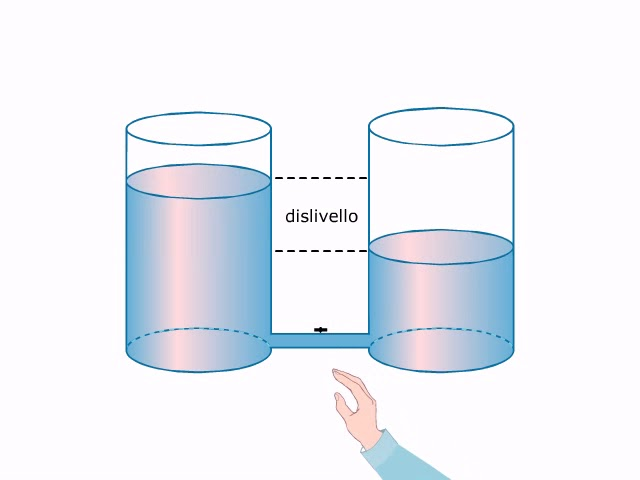
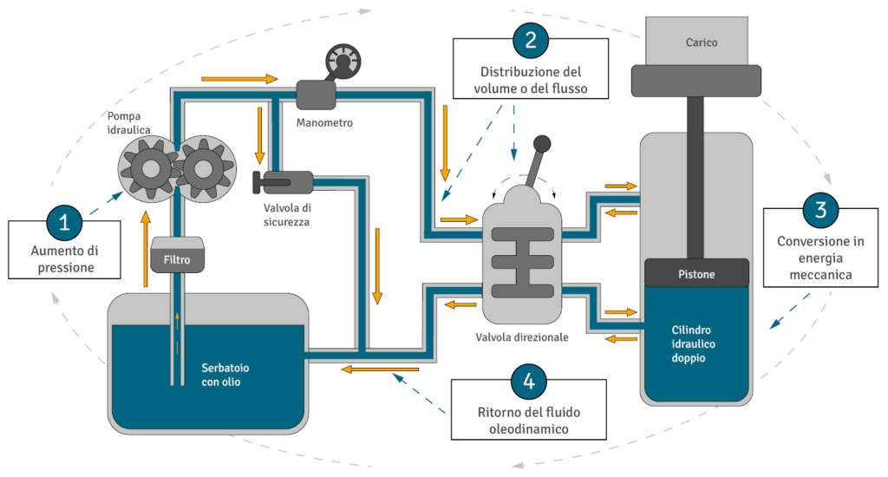
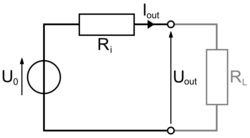

Il principio dei vasi comunicanti è un'analogia per la corrente elettrica.In un circuito elettrico, la differenza di potenziale è la "forza" che spinge gli elettroni, proprio come la differenza di altezza spinge il liquido.
La corrente idraulica è il movimento di un fluido che scorre lungo un corso d'acqua o all'interno di un condotto.
Un generatore di tensione è un dispositivo elettrico che mantiene una differenza di potenziale costante tra i suoi due terminali per far circolare corrente in un circuito.
